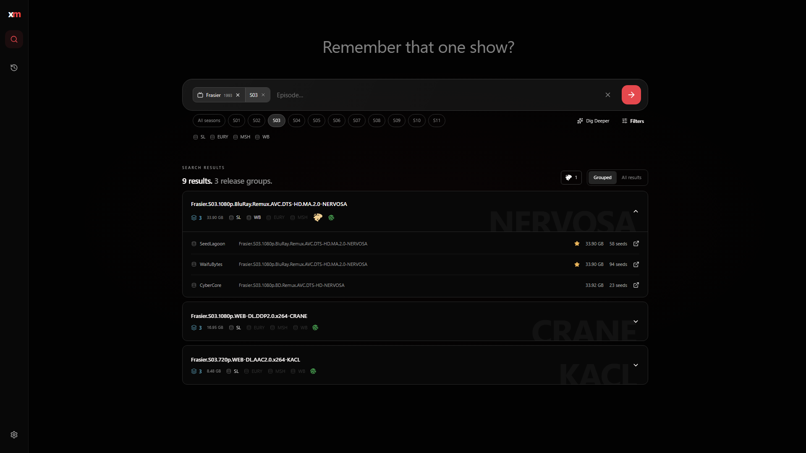

xseek · match
Cross-seeking tool and cross-seed optimizer for Prowlarr, with Sonarr, Radarr, qui, and Yata context.
Screenshots & themes

Quick start
Point xseek-match at your Prowlarr instance with Docker Compose and sign in from your browser.
Docker Compose
mkdir xseek-match && cd xseek-match
curl -fsSLO https://raw.githubusercontent.com/getxseek/xseek-match/main/compose.yaml
curl -fsSL -o .env https://raw.githubusercontent.com/getxseek/xseek-match/main/.env.example
# Set PROWLARR_BASE_URL, PROWLARR_API_KEY, and APP_ORIGIN in .env
docker compose up -d